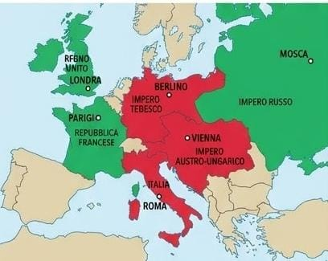
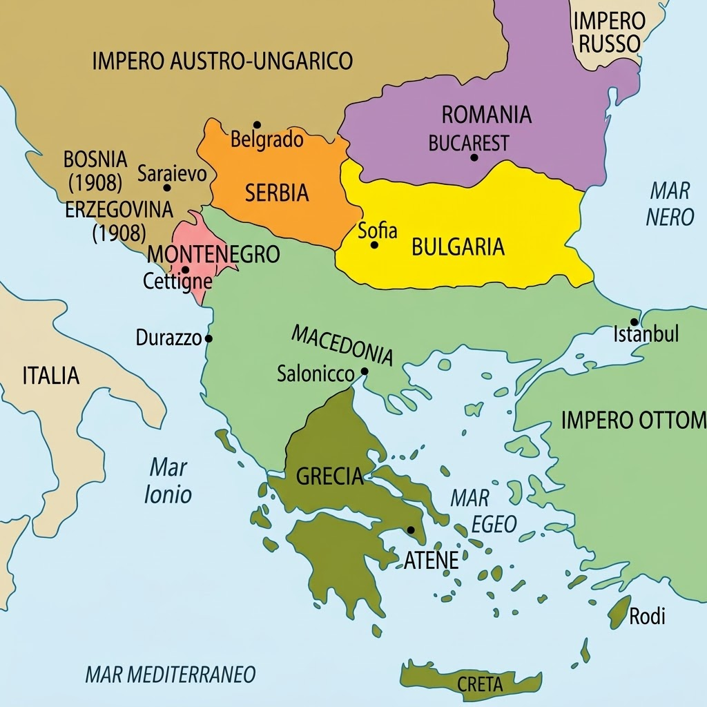
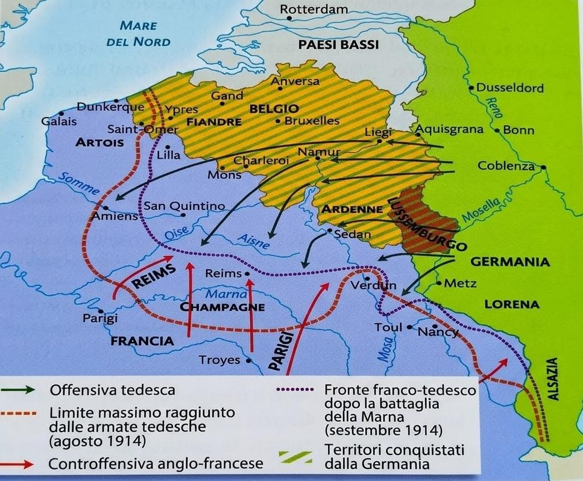
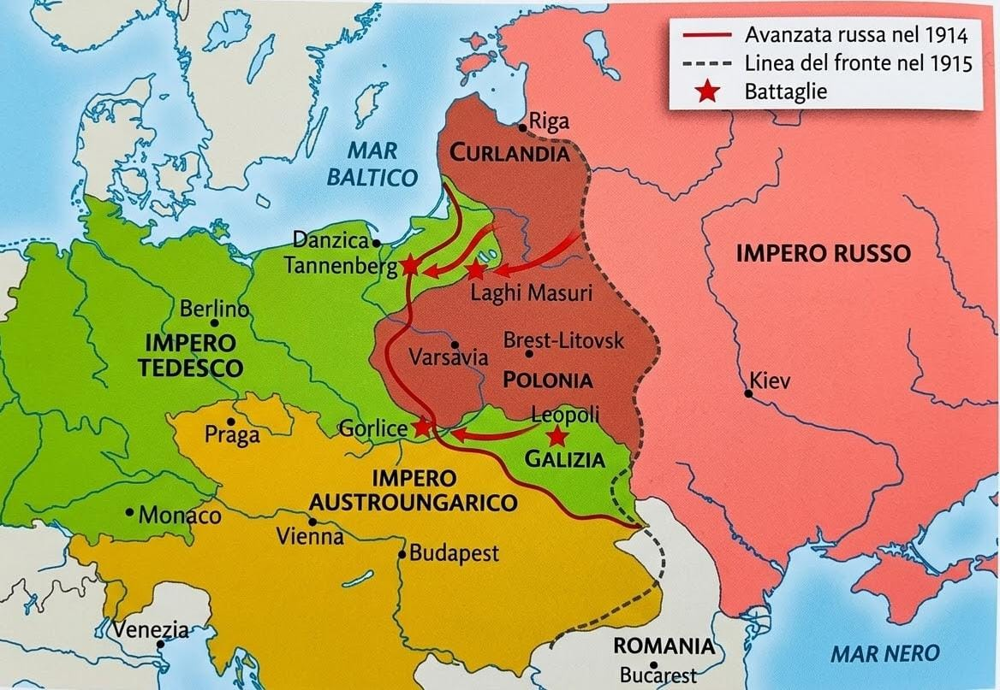
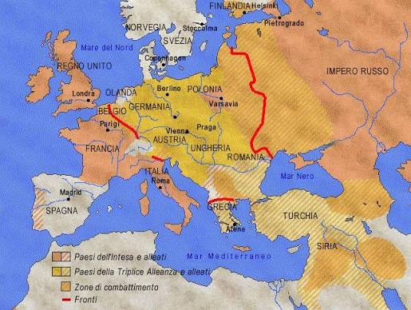
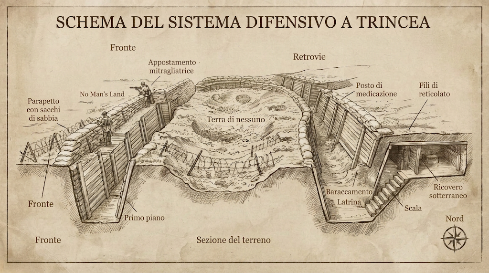
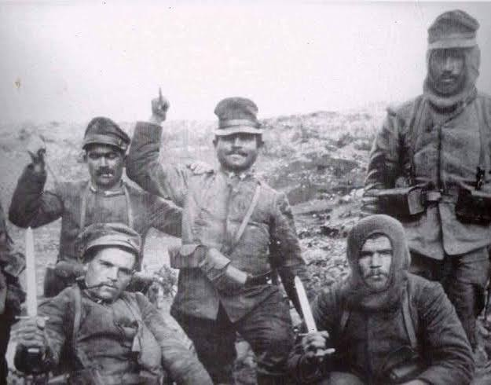

La Triplice Intesa si forma nel 1907 ed è un accordo tra tre paesi che vogliono fermare la Germania e l'Austria.
La Triplice Alleanza è un patto difensivo del 1882: i tre paesi si aiutano solo se uno di loro viene attaccato.
L'Impero Ottomano si stava indebolendo e nei Balcani Austria e Russia volevano aumentare la loro influenza. Per questo la zona era molto tesa, tanto che veniva chiamata "polveriera d'Europa".
Nel 1908 l'Austria si prende la Bosnia-Erzegovina. La Serbia non è d'accordo perché voleva riunire sotto di sé gli slavi del sud.
La Russia sostiene la Serbia e gli slavi ortodossi, e allo stesso tempo vuole arrivare al Mar Mediterraneo.

Nei primi anni del Novecento il quadro internazionale europeo era segnato da un forte antagonismo tra le grandi potenze, destinato a spezzare gli equilibri continentali e a portare alla mobilitazione generale. Sebbene lo scoppio di un conflitto fosse ormai nell'aria, nessuno immaginava le dimensioni e la durata che avrebbe assunto: all'epoca, infatti, tutti credevano in una rapida Guerra lampo.
La guerra parte da un fatto preciso nei Balcani, e in poche settimane le alleanze fanno il resto.
Il 28 giugno 1914 a Sarajevo lo studente serbo-bosniaco Gavrilo Princip uccide l'arciduca Francesco Ferdinando, che doveva diventare imperatore d'Austria-Ungheria.
Il 28 luglio l'Austria-Ungheria dichiara guerra alla Serbia, perché la considera colpevole dell'attentato.
La Russia mobilita l'esercito per aiutare la Serbia. La Germania allora dichiara guerra a Russia e Francia e attacca il Belgio, e così entra in guerra anche la Gran Bretagna.


L'Italia era alleata di Germania e Austria, ma nel 1914 resta neutrale: il patto era difensivo e a dichiarare guerra era stata l'Austria.
In Italia ci sono mesi di discussioni tra neutralisti, che vogliono restare fuori, e interventisti, che vogliono entrare in guerra. Ad aprile 1915 il governo firma in segreto il Patto di Londra con la Triplice Intesa: in cambio dell'aiuto l'Italia avrebbe avuto Trentino, Alto Adige, Trieste, Istria e Dalmazia. Il 24 maggio 1915 l'Italia dichiara guerra all'Austria-Ungheria.
Le trincee erano opere di fortificazione difensive consistenti in grandi fossati scavati nella terra o nella roccia e rinforzati con pali di legno e sacchi di sabbia. Lo spazio tra le linee nemiche era detto "terra di nessuno" e veniva riempito di mine e reticolati di filo spinato per contrastare gli assalti.
I soldati restavano nelle trincee per settimane o mesi esposti alle intemperie e ai bombardamenti. Bloccati nel fango, al freddo, tra rifiuti, sporco, pidocchi e topi, gli uomini manifestarono gravi forme di disagio psichico definite "nevrosi da guerra". I soldati traumatizzati erano spesso ricoverati in ospedali psichiatrici militari improvvisati, dove venivano curati con elettroshock per essere poi rispediti al fronte.

Riferimento geografico e territoriale dei settori del fronte.

Seleziona uno dei punti numerati sopra per scoprire come funzionava ogni settore del fronte.
Costituita il 1° marzo 1915 con il 151° e il 152° Reggimento Fanteria, fu l'unica brigata dell'esercito italiano reclutata quasi interamente su base regionale, formata in gran parte da contadini, minatori e pastori provenienti dalle zone interne della Sardegna.

Fanti della Brigata Sassari al fronte. Il forte legame territoriale e l'uso della lingua sarda crearono una coesione unica tra i reparti.
Abbonati a una vita dura sulle montagne e nelle campagne della Sardegna, molti fanti portarono al fronte la resistenza fisica, lo spirito di solidarietà e un forte senso dell'onore. In trincea comunicavano spesso in sardo, rendendo le loro trasmissioni incomprensibili al nemico, e si distinsero per l'audacia negli assalti all'arma bianca, guadagnandosi sul campo l'appellativo di "Diavoli" (dal colore delle mostrine bianco-rosse).
Entrambi i reggimenti (151° e 152°) furono decorati con due Medaglie d'Oro al Valor Militare ciascuno. La loro esperienza fu raccontata anche dallo scrittore Emilio Lussu nel celebre libro Un anno sull'Altipiano.
Nel 1918 gli Imperi centrali sono ormai stremati e non riescono più a continuare.
Entra in vigore l'armistizio di Villa Giusti: l'Austria-Ungheria si arrende all'Italia.
La Germania firma l'armistizio con gli Alleati a Compiègne, in Francia, e sul fronte occidentale si smette di combattere.
Con il Trattato di Versailles la guerra con la Germania finisce ufficialmente.